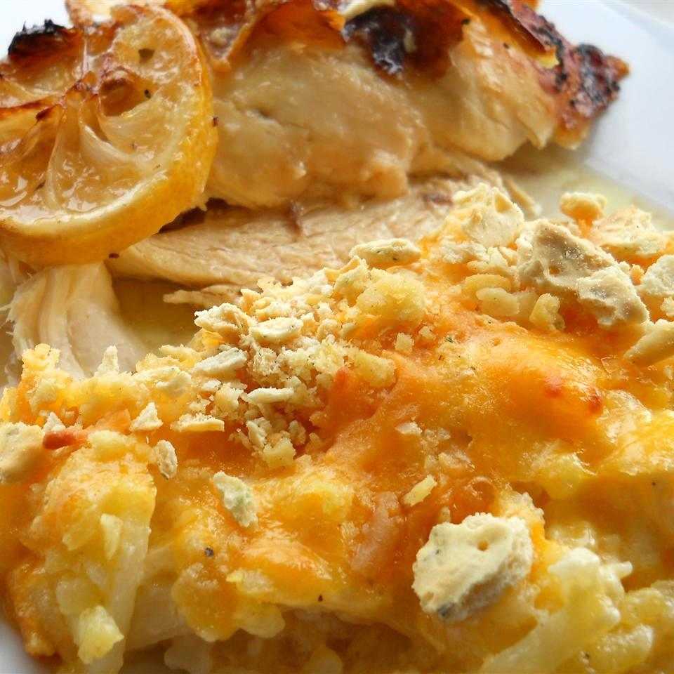

Cheesy Hashbrown Casserole
Description
This cheesy hashbrown casserole has lots of Cheddar and a crunchy cornflake topping.
Ingredients
- 1 (2 pound) package frozen hash brown potatoes, thawed
- 2 cups shredded Cheddar cheese
- 1 (10.75 ounce) can condensed cream of chicken soup
- 1 (8 ounce) container sour cream
- ¾ cup butter, melted, divided
- ½ cup chopped onion
- 1 teaspoon salt
- ¼ teaspoon ground black pepper
- 2 cups crushed cornflakes
Directions
- Preheat the oven to 350 degrees F (175 degrees C).
- Combine hash browns, Cheddar cheese, condensed soup, sour cream, 1/2 cup melted butter, onion, salt, and pepper in a large bowl. Transfer mixture to a 3-quart casserole dish.
- Saute cornflakes and remaining 1/4 cup melted butter in a saucepan over medium heat. Sprinkle the mixture over the top of the casserole.
- Cover casserole and bake in the preheated oven for 40 minutes.